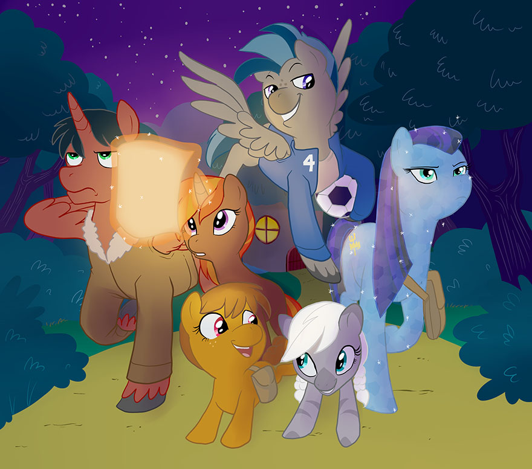

Playing an Episode
Structure of Gameplay
S3E is designed to be easy to play, with a loose structure of rules meant to appeal to beginner and ‘freeform’ roleplayers and to encourage collaborative storytelling. There are six important terms to learn and remember, and these are: Theater of the Mind, Scenes, Narrative Mode, Cinematic Mode, Rounds, and the “P.I.E.” acronym. In this section, each of these terms and how they govern gameplay will be explained.
Theater of the Mind
S3E falls within the genre of ‘collaborative storytelling’ games, which is more loosely-governed than other game types in terms of exactly what a character can and cannot do. This means that S3E is played primarily with the group’s imagination and interpretation, and with secondary materials (such as grids, maps, tables, charts, and exact measurements of range, damage, movement speed, etc) having less of an impact on moment-to-moment gameplay. This style of play is relatively subjective and fluid when compared to other games in the RPG genre, and is best described with the term Theater of the Mind.
Scenes
Individual parts of an Episode of S3E can be separated into Scenes, which are distinct sequences of action and narrative revolving around a central plot point. Scenes can be identified by considering an Episode of S3E as if it were an episode of the original cartoon: they could be anything from “talking to ponies around town to find information,” to “confronting the hydra,” to “traveling through the forest.” Many parts of S3E revolve around the concept of Scenes, and it is thus important to approach gameplay with Scenes in mind.
Narrative Mode
Scenes in S3E are separated into two types: Narrative Mode and Cinematic Mode. A Narrative Mode Scene is a Scene in which timing isn’t necessarily important. It is the ‘exploration’ mode of the game. For example, when going around town looking for clues, or searching a cave for a secret door, or traveling through the forest, the moment-to-moment timing of the game isn’t very important. Thus, those are all Narrative Mode Scenes. Narrative Mode is fast and loose, with the GM and the players working together to tell the story, and the GM keeping things organized without needing to take gameplay into the more ordered Cinematic Mode.
Cinematic Mode
The other type of Scene in S3E is Cinematic Mode. A Cinematic Mode Scene is a Scene in which timing and bookkeeping of numbers are more important, and often one in which when danger or threat is a focal point of gameplay. For instance, Cinematic Mode comes into play when the players’ characters are facing an adversary or handling a tense or difficult situation like a sporting competition or escaping from Ahuizotl’s latest series of traps. A Cinematic Mode Scene is played out in a sequence of Rounds, with a uniform order of action and reaction that is repeated from Round to Round.
Rounds
Rounds are the most organized gameplay structure in S3E, and are meant to be used when a lot of action is taking place—often in response to danger, difficulty, or threat. Rounds are useful in that they allow the GM and the players to keep track of everything going on in the correct order by making the potentially chaotic narrative of the story adhere to a linear progression of action and reaction each Round. This progression is abbreviated into the acronym “P.I.E.”
P.I.E.
P.I.E. stands for “Presentation, Initiative, Effects.” It is the formula of steps for resolving each Round of a Cinematic Mode Scene. The following will describe each step in detail, and give examples of P.I.E. in action.
Presentation: First, the GM will present the scene (or continue the scene from the previous round), with a brief piece of narration, and, if necessary, will present a challenge. For example:
“You enter the dark banquet hall, moonlight hidden by old, heavy curtains. Cobwebs and dust lie heavily over the long table and old chairs. However, after taking a few steps, the candles and the fireplace suddenly spring to life, flame flaring to life and illuminating the hall—and the cloaked figure seated at the head of the table. “I am pleased you could join me for dinner,” he says, “I have been hungry for so long, and you look so delicious…” From the rafters, a swarm of bats come screeching down toward you, flapping their leathery wings as they attack!”
Initiative: Next, the GM will call for reactions from selected characters, followed by actions from everyone. First, those characters who the GM decides are entitled to reactions get to take a short, often defensive, action (for example, a reaction may be to dodge out of the way of a falling tree, or to make a reply to an insult directed at them). The reacting characters may act in any order they choose, sharing one group ‘turn’, and all of the characters’ reactions are resolved at once, with the results being interpreted by the GM accordingly. If they can’t cooperate to decide on their own action order, the GM may decide they’ve lost their chance to react due to bickering. Usually, only characters who are directly affected by some part of the scene presentation are entitled to a reaction, though this is left up to GM discretion. For example:
The GM decides that only three members of the group are in direct danger of attack from the bat swarm, and so calls for reactions from them. Two characters try to dodge out of the way, and one tries to blind the bats with a flash of magical light. The GM resolves all of the reactions, and decides how the combined reaction plays out. One of the dodging characters succeeded, but the other failed—but the character who tried to blind the bats succeeded! The GM decides that the blinding light prevents the bats from harming anyone for the moment, and thus the light-wielding character’s reaction ‘saved’ the failed dodging character as well.
After reactions have been resolved, the GM will call for everyone to make a single action. This action can be more complex than a reaction, but still usually only takes a few seconds; the GM and the players should work together to make sure that a given action is neither too short, nor too long, based on the scene at hand. Actions are taken in any order the players choose, and are resolved individually (not as a group, as reactions are). Just as with reactions, if the players cannot work together to decide action order, the GM may rule that they’ve lost their opportunity. Characters who choose to simply ‘assist’ a fellow character are counted as acting at the same time as the character they are helping. For example:
The characters, with a brief reprieve from the bat swarm, decide to take the offensive. A Pegasus tries flying in a circle to summon a small tornado to trap the bats while the others confront their mysterious adversary. It works, and the bats are kept busy in the cyclone. The other characters confront the cloaked figure. One steps forward, and all the others ‘assist’ the group leader, backing them up as they demand that he tells them his name, and where he’s taken Princess Luna!
Effects: Finally, the GM will narrate any extra effects that either occur as a result of the characters’ actions over the course of the round or that should be highlighted for the players’ benefit. This is a ‘clean-up’ step, and may be skipped if the GM decides to move on to the next round instead. For example:
As the characters confront their mysterious adversary, the bats, confused by the tornado, seem to break out of a magical trance they’ve been kept under and no longer seem hostile.
With the Effects step complete, this Round ends and a new Round begins with its Presentation step.
Skill Checks
Skill Checks are the backbone of character actions in S3E. Any time a character attempts a task, the GM may require that they make a Skill Check to determine if they were successful or not. In general, easy tasks, or tasks with little-to-no narrative significance, can be resolved without requiring a Skill Check; however, most tasks a character attempts which impact the story are good candidates for Skill Checks. Skill Checks are also used to determine the victor in a directly opposed action or a competition between characters. This section will explain how to perform the three types of Skill Checks: Standard, Opposed, and Competitive.
Standard Skill Checks
When making any Skill Check, a higher result is desirable, as the total of a Skill Check is compared to a target difficulty number. If the total meets or exceeds the difficulty target, the Skill Check is successful; if it doesn't, it is a failure. To make a normal Skill Check, perform the following steps.
Step One: Describe the action your character is taking, and work with your GM to decide what Skill best applies to the task. This will also give you the Skill's base Attribute, as all Skills fall under an Attribute. A Skill Check may only involve one Skill. For example, if trying to spot someone hiding in the bushes, you would use the Observation Skill (in the Detective category), which has Mind as its base Attribute.
Step Two: Determine with your GM if your character is using an appropriate Tool for the task being attempted. If they are using an appropriate Tool, you will roll an extra d6 with the 2d6 roll in the next step, and then drop the lowest d6 out of the three. For example, if your character is trying to pry open a door, and is using a crowbar to do it, they would be counted as using an appropriate Tool for the task.
Step Three: Roll 2d6, or roll 3d6 and drop the lowest d6 if an appropriate Tool is in use. For example, you might roll a 3 and a 4, for a total of 7. If using a Tool, you might roll a 3, a 4, and a 5, and drop the 3, making your effective rolls a 4 and a 5, for a total of 9.
Step Four: Add the base Attribute of the Skill being used to the 2d6 total. For example, if your Skill's base Attribute score was a 3, you would add +3 to the 2d6 total.
Step Five: Add the Rank of the Skill being used to the 2d6 total. For example, if your Skill's Rank was a 6, you would add +6 to the 2d6 total.
Step Six: Add any bonuses from Natural Abilities or Special Abilities you may have to the 2d6 total. For example, the “Special Purpose” Natural Ability adds +2 to the 2d6 total for any Skill Check to which the Special Purpose applies.
Step Seven: Add any bonuses from Edges you may have to the 2d6 total. For example, the "Pony Prodigy" Edge adds +1 to the 2d6 total for certain Skill Checks involving a Skill of Rank of 1 or higher.
Step Eight: Add any bonus from friends assisting with the Skill Check to the 2d6 total. For each friend actively helping, gain a +1 to the 2d6 total. No more than 5 friends may help with a single Skill Check. For example, if two friends were helping with a task, you would add +2 to the 2d6 total.
Step Nine: If the initial 2d6 roll was doubles, the result (either success or failure) will be a “Critical.” A Critical Success makes a success even better than normal, where a Critical Failure makes a failure even worse than normal. How this is interpreted is up to the GM. For example, if the result was a pair of 4's, the result will be either a Critical Success or a Critical Failure.
Step Ten: Give the GM the total of the 2d6 roll plus all additions and bonuses, as well as whether or not doubles were rolled. The GM will determine the outcome of the Skill Check based on the final total and the difficulty they set for the task. For example, after all bonuses, your result might be 21, with doubles having been rolled. The GM may determine that this is enough to succeed, and because of the doubles, it is a Critical Success.
Opposed Skill Checks
Sometimes, characters may attempt tasks which are directly opposed to one another; for example, playing tug-of-war, having a race, or hoof-wrestling would all be Opposed Skill Checks. In those cases, simply follow the steps for a Standard Skill Check, except that in Step Ten whichever character has the highest total succeeds at the opposed Skill Check (i.e. winning the tug-of-war, race, hoof-wrestling match, or whatever else was at stake, as interpreted by the GM). The other character fails at the Opposed Skill Check.
Competitive Skill Checks
Sometimes, characters may attempt tasks with the intent to out-perform one another; for example, two teams each trying to produce more cider than the other would be a Competitive Skill Check. In these cases, it becomes important not just to see who performed better, but also to make sure that the involved characters both succeeded in the first place. This kind of Competitive Skill Check is a combination of a Standard Skill Check and an Opposed Skill Check, in that the characters involved must first succeed at the difficulty set by the GM, and then their results are compared to decide who performed the best. Only the character who succeeds against the difficulty of the task and out-performs their opponent(s) is counted as having succeeded at the Competitive Skill Check; all others fail the Competitive Skill Check.
Damage, Recovery, & Sidelining
Danger to characters in Equestria can come from all angles, be it from a monster attacking from the Everfree Forest, to a bully in Ponyville who just won't leave them alone. Because of this, characters may take damage to both their physical and emotional state, and damaging either one may be enough to 'Sideline,' or temporarily defeat, a character. The toughest soldier may be emotionally sensitive, and the strongest will may come in a physically frail body. This section will explain how characters are harmed, what happens to them as a result of being harmed, and how they recover.
Taking Damage
Dangerous situations can lead to characters taking damage to their Fortitude and Willpower, through physical harm (for Fortitude) or mental / emotional harm (for Willpower). The GM determines the type and severity of the harm being inflicted, which yields a number of d6’s of damage.
For example, a character doesn’t manage to get out of the way of a charging buffalo. The GM determines that the buffalo hitting the character inflicts ‘Heavy’ physical harm, which is 6d6 damage to Fortitude. When it is rolled, the result is 3, 5, 1, 2, 5, and 2, for a total of 18.
Recovering With Virtue
As long as a character’s Fortitude and Willpower totals are above zero, they can spend Virtue to recover lost Fortitude and Willpower, up to their maximum. This may be done as either a reaction or an action during a round of Cinematic Mode gameplay, or at any time during Narrative Mode gameplay. In addition, multiple points of Virtue may be spent at a time. For every point of Virtue a character spends, they may either recover (1d6 + Heart) of their own Fortitude and Willpower, or allow a friend to recover (1d6 + Heart) Fortitude and Willpower. In this way, characters may use Virtue to maintain their own levels of Fortitude and Willpower or may help a friend in need avoid dropping to zero. The Heart score that applies to the recovery is always the Heart score of the character who spends the Virtue point.
For example, a character who has dropped to 5 Fortitude out of their maximum may, by spending 3 points of Virtue, recover (3d6 + 3x Heart) Fortitude and Willpower. They might also have spent 3 points of Virtue to recover (3d6 + 3x Heart) of a friend’s Fortitude and Willpower, or may split the expenditure as 2 points for (2d6 + 2x Heart) Fortitude and Willpower for themselves and 1 point for (1d6 + Heart) Fortitude and Willpower for their friend.
Being Sidelined
When either of a character’s Fortitude or Willpower totals reach zero, the character becomes Sidelined, and cannot recover from being Sidelined unless an effect is used which specifically says that they recover from being Sidelined. A Sidelined character cannot take normal actions, and is effectively ‘out of action’ for the duration of a scene. The only actions a Sidelined character can take are ones granted via Edges or Special Abilities (for example, the ‘Determined’ Edge allows a character to recover from being Sidelined once per scene)—otherwise, the GM controls the character until they decide to return control to the player, or until the scene is over. If all characters are Sidelined, the GM may declare that the game is over, or may take the story in a different direction. Being Sidelined isn’t always the end: it may allow for characters to be captured or for other events to occur in the story while everypony is temporarily incapacitated. A character becomes Sidelined according to the situation at hand and whether Fortitude or Willpower was reduced to zero.
For example, a character participating in a joust who runs out of Fortitude might be knocked out or exhausted, whereas a character who is facing a scary monster and runs out of Willpower might be forced to run away in fear. Either are appropriate examples of being ‘Sidelined.’
After-Action Recovery
The GM may, after a dangerous scene is over, restore all Sidelined characters to being actively playable, as well as restoring them to 1 Fortitude and Willpower and get them ‘back on their feet,’ so to speak. In addition, a character may have all (or some, at the GM’s discretion) of their lost Fortitude and Willpower restored by resting, relaxing, or otherwise engaging in ‘focused recovery’ between dangerous scenes or as a result of other events, at the GM’s discretion.
For example, after the dragon has been sent on its way from Equestria, the GM rules that the scene is over, and the four characters who were Sidelined are restored to 1 Fortitude and Willpower and recover from being Sidelined. After returning to town, the group takes the opportunity to relax together from their adventure, and the GM rules that this ‘focused recovery’ restores everyone to full Fortitude and Willpower.
Virtue
Virtue is a unique resource which characters gain and lose based on their moral behavior and ethical actions, and which they can spend for various purposes. It gives characters who strive to be the ‘good guys’ a tangible benefit for doing so, and helps to promote the central themes of S3E and the original cartoon in gameplay. Virtue is not an alignment mechanic; characters can be from any and all walks of life, with any kind of view on morality and philosophy, and still make use of S3E’s Virtue system.
Virtue is a highly subjective concept, and as such how it manifests itself in gameplay will undoubtedly vary from group to group—all that matters is that Virtue represents characters who try to do the right thing, as best they know how. Virtue has already been touched on and explained a bit in character creation, but this section will expand on Virtue in a bit more technical depth.
Gaining Virtue
Whenever a character does (or earnestly attempts) something especially moral or ethical, usually going out of their way or accepting a burden of some kind to do it, the GM should award that character one point of Virtue. While it is possible for the GM to award multiple points of Virtue for exceptionally moral acts, it is not the norm; Virtue is earned best over time. There is no limit to how many points of Virtue a character has, although they do not save points of Virtue from one Episode to the next and must reset their total at the beginning of each Episode.
Losing Virtue
Whenever a character does something knowingly immoral, usually for their own gain and to someone else's detriment, the GM should penalize that character at least one point of Virtue. For more wantonly immoral behavior, the GM may dramatically increase this penalty—even taking all of a character's Virtue points away at once if the character does something truly deplorable.
Using Virtue
Virtue can be spent during gameplay to restore a character's lost Fortitude and Willpower. This restoration can be used on the character spending the Virtue, or on any other character present in the Scene, and multiple points of Virtue may be spent at the same time by a character. For every point of Virtue a character spends, they may recover (1d6 + Heart) of their own Fortitude and Willpower (up to their maximum), or allow a friend to recover that amount—and each point, even when spent all at the same time, may be applied to a different character. The Heart score which is used in the recovery is always the Heart score of the character who is spending the Virtue point.
Additionally, certain Edges, Natural Abilities, and Special Abilities give characters other ways to use their Virtue points.
Ending an Episode
After the action of an Episode is over, there is a final phase of the Episode in which characters earn Experience Points. This Experience Point gain is based on the character growth the character experienced through the lessons that they learned from the Episode, and takes the form of a ‘Letter To The Princess.’ This phase of an Episode, as well as Experience Points and how characters advance through gaining them, are covered in detail in the next chapter.